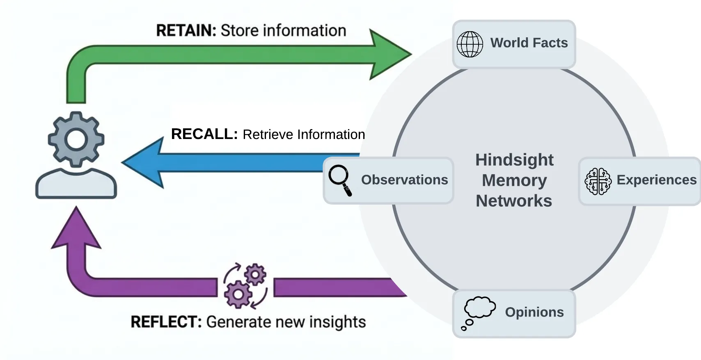

Hindsight
A long-term memory service for AI agents - they store what they learn, recall it later, and get better over time.
Give your AI agent a persistent memory so it remembers your preferences, past decisions and project context across sessions - like a digital notebook it reads before every conversation.

How does it work?
Your AI agent forgets everything between sessions - it asks the same questions, misses context, and starts from scratch every time.
You tell your coding agent your project uses PostgreSQL and prefers tabs over spaces. Next session, it suggests MySQL and uses spaces.
Your agent calls Hindsight's 'retain' operation after each conversation, and 'recall' before the next one.
At the end of a coding session, the agent sends its notes to Hindsight. Before the next session, it asks Hindsight what it knows about this project.
Conversations, facts, decisions and preferences - anything the agent should remember later.
A conversation where you told the agent 'always use TypeScript, never JavaScript' and 'deploy to the staging server first'.
It breaks conversations into facts, stores them, and builds a picture of what it knows over time.
- Retain: breaks the input into individual facts and relationships, stores them with timestamps and context
- Recall: searches stored memories using four strategies at once (meaning, keywords, connections and time) and ranks the best matches
- Reflect: looks across many memories to answer questions that need reasoning, like 'what patterns does this user follow?'
After 20 sessions, Hindsight has built a profile: this user prefers TypeScript, deploys to staging first, and reviews PRs on Monday mornings.
An agent that remembers what you told it, learns your preferences, and gets more useful over time.
- Persistent memory across sessionsThe agent recalls that you use PostgreSQL without being told again
- Observations that build over timeAfter several sessions, Hindsight consolidates 'prefers tabs' into a standing observation the agent always sees
- Answers to standing questionsA 'mental model' page answers 'what are this user's coding preferences?' without searching each time
What changes for me?
Without it
- Your AI agent forgets everything between sessions. You repeat your preferences, your project context, and your past decisions every time.
- There is no shared memory across agents - if you use Claude Code and another tool, each one starts from zero.
- You keep a manual notes file of context to paste into each new session.
With it
- The agent remembers your preferences, past decisions and project context across sessions, and they improve over time as it consolidates what it learns.
- Multiple agents share the same memory, so switching between tools does not mean starting over.
- Standing 'mental model' pages answer common questions instantly, without searching or calling an AI model each time.
How hard is it to try?
Effort
- Read the quickstart guide to choose your install method: a container image, a Python package, or the managed cloud service.
- Run the container image with your AI provider key:
docker run -d -p 8888:8888 -p 9999:9999 -e OPENAI_API_KEY=your-key ghcr.io/vectorize-io/hindsight:latest. Open localhost:9999 to see the dashboard. - Install the Python or Node.js client and try the retain-recall-reflect cycle from the cookbook.
What it takes on your computer
- Space on disk
- Container image: no data found for image size. Python package (hindsight-all): large dependency tree including PyTorch - one reviewer ran out of space in a 2 GB container. Binary downloads: about 3-4 MB per platform (macOS ARM 2.8 MB, Linux x64 4.1 MB). Needs a PostgreSQL database with pgvector.
- Memory while it runs
- No data found. Requires a running PostgreSQL instance and an AI provider key for the extract step.
- Runs on
- Linux (x86_64 and ARM64), macOS (Apple Silicon and Intel - Intel is limited, use the slim package), Windows (x86_64). Also available as a managed cloud service.
Paste this into Claude Code. It runs your safety scan first, then a 10-minute test.
/skillspector https://github.com/vectorize-io/hindsight If that scan passes: run the container image with `docker run -d -p 8888:8888 -p 9999:9999 -e OPENAI_API_KEY=$OPENAI_API_KEY ghcr.io/vectorize-io/hindsight:latest`, then install the Python client with `pip install hindsight-client` and try the retain and recall example from the quickstart. 10 minutes max.
Should I?
Great if you...
- You build AI agents that talk to the same users repeatedly and need to remember past conversations and preferences
- You want agents that improve over time by consolidating what they learn into reusable knowledge
Skip it if...
- You only use AI agents for one-off tasks - persistent memory adds complexity with no payoff if there is nothing to remember
- You need a simple key-value store - Hindsight's retain-recall-reflect pipeline requires an AI provider key and a database, which is heavy for basic storage
- You want something that works without any cloud AI service - Hindsight needs an AI provider for fact extraction
Is it safe?
- Security advisories: 0GitHub's advisory list, checked Oct 23
- Searches for CVEs, vulnerabilities, malware and scams20 results read, including the national CVE database: nothing found
- Are the stars earned?53K stars, 289 contributors, 3.9K commits
Watch out for
- Benchmark numbers are self-reported. The project claims 94.6% on LongMemEval and says Virginia Tech and The Washington Post independently reproduced the results, but the reproduction details are on the vendor's own site.
- The pip install is very large. One reviewer's install failed after 226 seconds in a 2 GB container because the dependency tree (including PyTorch) ran out of space. Start with the container image instead.
- Commercial company behind it. Vectorize.io offers a managed cloud service and an enterprise tier. The open-source project is MIT-licensed today, but the company's business model may shape future development.
- Fortune 500 claims are unverified. The project says it is used in production at Fortune 500 enterprises, but names no companies and no independent source confirms this.
Who's using it, and for what?
Hindsight is 12 months old with 53K stars. The project claims Fortune 500 adoption but names no companies. Independent real-world case studies are hard to find.
andrew.ooo (AI-agent-operated review site)
Attempted a hands-on install and test of Hindsight in a clean container
The pip install failed after 226 seconds with 'No space left on device' due to the large dependency tree. Recommended starting with the container image instead.
Hindsight review: agent memory that learns, Oct 5
Sources
- Hindsight on GitHub (README, releases), Oct 23
- Hindsight documentation, Oct 23
- Hindsight v1.1.0 release notes, Oct 21
- Hindsight review (andrew.ooo), Oct 5
- Eric Michaud YouTube video, Oct 13
- Hindsight arXiv paper, Dec undefined
- Hindsight feature overview (emelia.io)